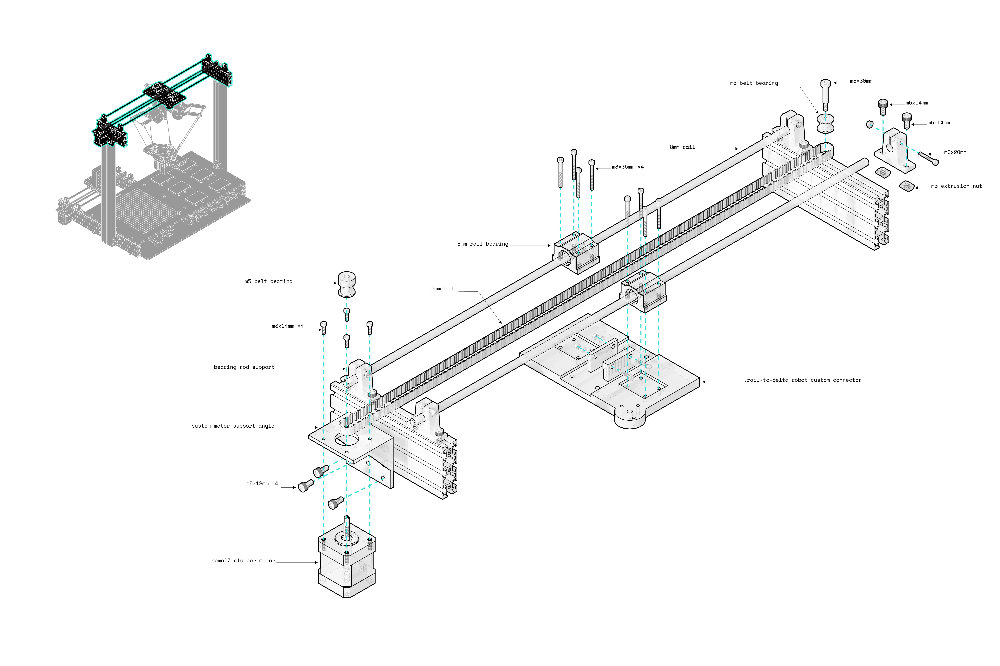
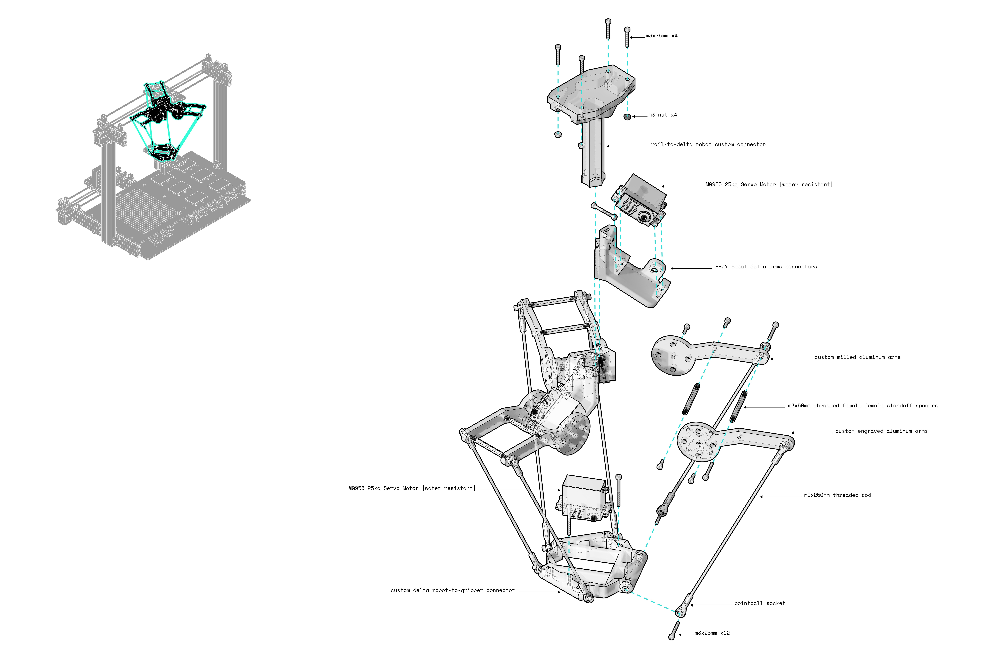
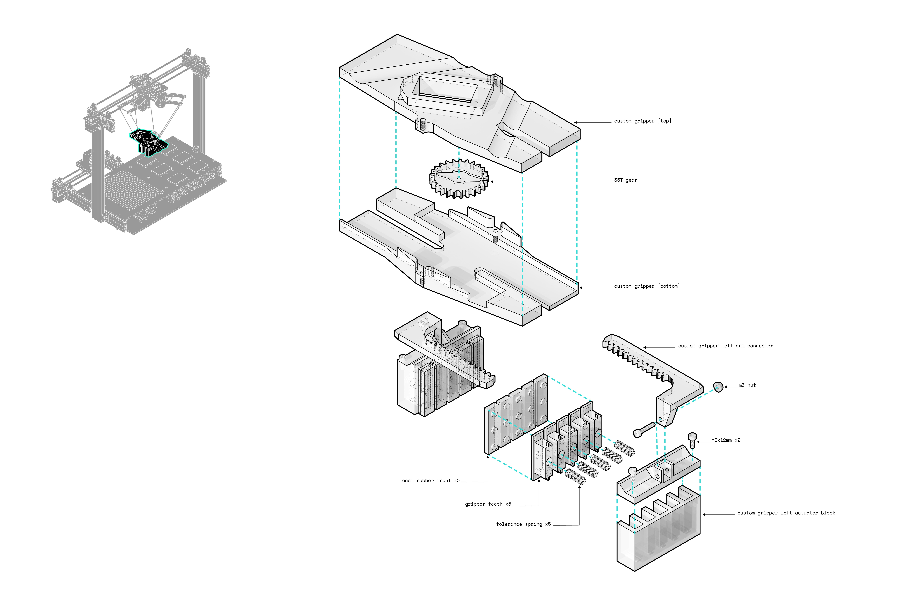
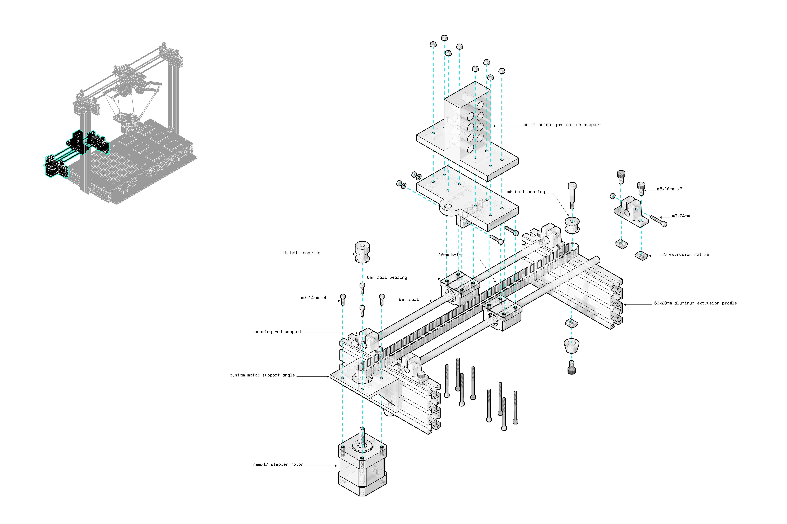

· rockbot 1.0 ·
MIT Media Lab | Fall 2021
Course: How to Make [almost] Anything
Advisor: Neil Gershenfeld
Construction technology have long delt with the challenge of geometries. Unlike non-linear building forms that are usually a resultant of standard industry material blocks, irregular natural geometry exhibits characteristics that are unique to each unit. Rocks is an example of that. Where every rock has its unique size, form and texture. Building useful compositions from rocks and boulders is a long craft that dates back thousands of years, mainly for building sheds and terrace retaining walls. Being able to understand each rock and balance it within an orientation that respects its surrounding remains a physical challenge. Rockbot attempts at solving this in both software and hardware tools.
Being able to use raw materials as is without the need for further refinement would save us a decent amount of left overs, simplifies the construction process, and opens the door for new forms of exploration and study to occur. This machine tries to perform a simple task: stack two rocks on top of each other. Once that task was accomplished, the next was to build a cantilever using a temporary support device. Through several trial and error process as well as digital simulatin, I was able to bring both tasks to life.
First, starting by scanning found rocks to create a digital 3D catalog and perform physics engine simulation to find a balanced composition using environmental constraints such as gravity and collision detection. This would be a step towards a pre-trained detection, where the machine would assemble a pre-simulated compositions based on its detection of [known] rocks from the catalog. However, this remained as a study to be further explored later on. Instead, rockbot 1.0 uses multiple sensors to detect a rock, approximate its dimensions, and then picks it up -> repeat function().

The Base ↓

Delta 1-axis Stepper Rail ↓
Delta Robot ↓
Custom Gripper ↓
Cantilever Support Mechanism ↓
1/5 Electronic Boards ↓


Copyright Ibrahim Ibrahim - All Rights Reserved